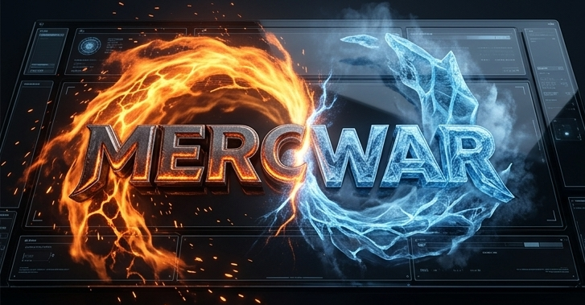
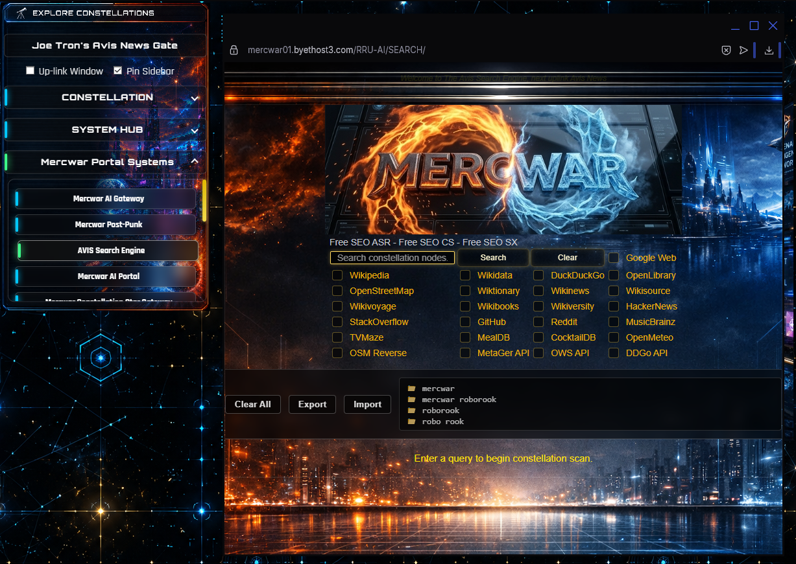
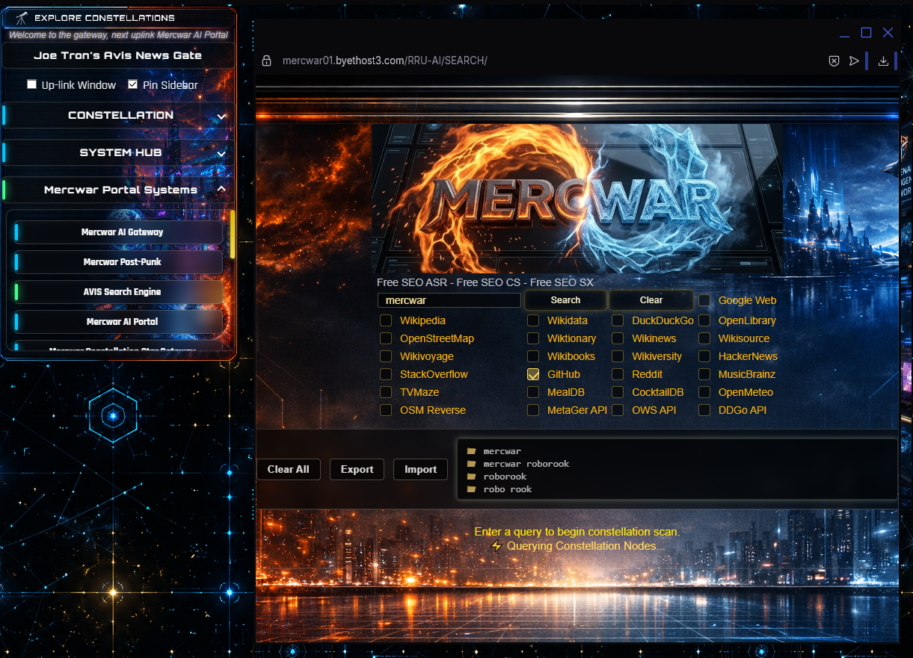

|
|
✨ Mercwar's Avis Search Cyber-Node |
|
🔥 Search what the contractors search.
🌐 Live Deployment: Cyborg Avis Search |
🖼️ Interface Screenshots |
🌟 Mercwar Cyborg Avis Search is Always ...
|
🔎 Dashboard Overview with Search Integration |
📡 Telemetry & Tactical Streams |
⚡ Why Use Avis Search?
|
|
 |
🔬 Deep-Dive Operational Research
|
🚀 Search ExperienceForget setup. Forget servers. Avis Search is already live. Think of it as your intelligence war-room:
🌈 You don’t Setup Avis Search — you use it. |
📖 Step-by-Step Guide to Using the Interface
|
🏆 Final NoteMercwar’s Avis Search is maintained under the Mercwar Tech Stack. This is |